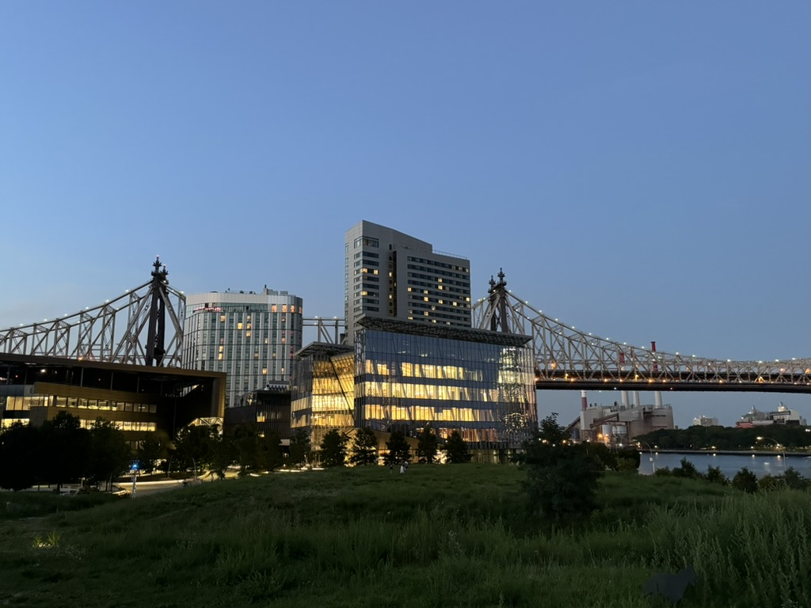

One of my favorite images that I took
Click to learn more interesting facts about Roosevelt Island!
- The island was previously known as Welfare Island and Blackwell's Island.
- The Roosevelt Island Tramway was the first commuter aerial tramway in North America.
- The island has its own unique pneumatic tube waste collection system.
- The Smallpox Hospital, now in ruins, is the only landmarked ruin in New York City.
Roosevelt Island is an island in New York City's East River, within the borough of Manhattan. It lies between Manhattan Island to the west, and the borough of Queens, on Long Island, to the east. It is about 2 miles (3.2 km) long, with an area of 147 acres (0.59 km2), and had a population of 11,722 as of the 2020 United States census. It consists of two largely residential communities: Northtown and Southtown. Roosevelt Island is owned by the city but was leased to the New York State Urban Development Corporation (UDC) for 99 years in 1969. The island was called Minnehanonck by the Lenape and Varken Eylandt[a] (Hog Island) by the Dutch during the colonial era and later Blackwell's Island. During much of the 19th and 20th centuries, the island was used by hospitals and prisons, with very limited access. It was renamed Welfare Island in 1921. Following several proposals to redevelop Welfare Island in the 1960s, the UDC leased the island, renamed it after former U.S. president Franklin D. Roosevelt in 1973, and redeveloped it as a series of residential neighborhoods. The first phase of Northtown, the island's first community, was completed in 1974, followed by the second phase (Northtown II) in 1989. Southtown was developed in the early 21st century, along with the Cornell Tech higher-education campus. In addition to residential towers, the island has several buildings that predate the residential development, including six that are New York City designated landmarks. The island is accessible by numerous modes of transport, including a bridge, an aerial tram, and the city's subway and ferry systems. Many government services, such as emergency services, are provided from Queens, but the island also has a post office and a pneumatic garbage-disposal system. There are several parks on Roosevelt Island as well, including a promenade around the island's perimeter and Four Freedoms Park at its southern end. In addition to Cornell Tech, the island contains an elementary school. Several houses of worship are located on Roosevelt Island, and numerous community organizations have been founded there.
Recent 311 Service Requests Near Roosevelt Island
Loading nearby 311 requests data...